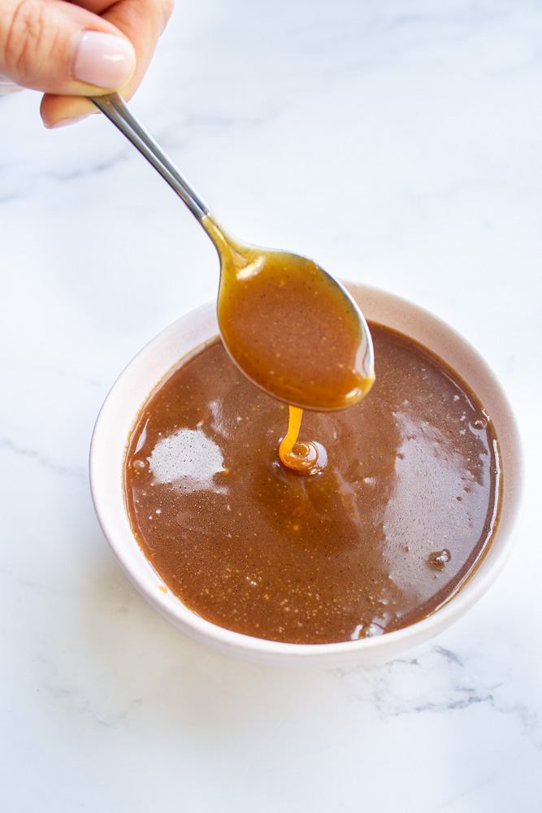

Salted Vanilla Beans Caramel

Caramel rich with flavor
Salted Caramel is added to basically anything and by adding Vanilla beans to it it will add
a richness and flavor that pairs perfectly with just about anything
Ingredients
- ⅔ cup heavy cream
- ¼ vanilla bean
- 1¼ cup sugar
- ¼ cup water
- ¼ teaspoon salt
- 2 tablespoon light corn syrup
- ¾ teaspoon fresh lemon juice
- 4 tablespoons unsalted butter cut into pieces
Instructions
- In a medium pot, combine the sugar, water, salt, and corn syrup (use a pan larger than the contents as it will bubble to ~4x the contents) Bring to a boil over medium heat, stirring to dissolve the sugar. Then cook, without stirring, until the mixture is amber colored, 5 to 8 minutes. Remove from the heat. (Complete step 2 while the mixture is becoming an amber color)
- While the sugar is heating, pour the heavy cream into a small pot. Add the vanilla bean (split and seeded with the tip of a sharp knife) to the cream. Place the pan over medium-high heat until it is just under a boil. Reduce the heat to low to keep the milk warm.
- Slowly pour the warmed cream into the amber sugar syrup. At first, the mixture will boil furiously but then will simmer down. Whisk until smooth. Add the lemon juice and cool for 10 minutes.
- One tablespoon at a time, add the butter to the caramel. Whisk constantly after each addition. If not using, cool and refrigerate. The caramel will keep in an airtight container in the refrigerator for 1 month.